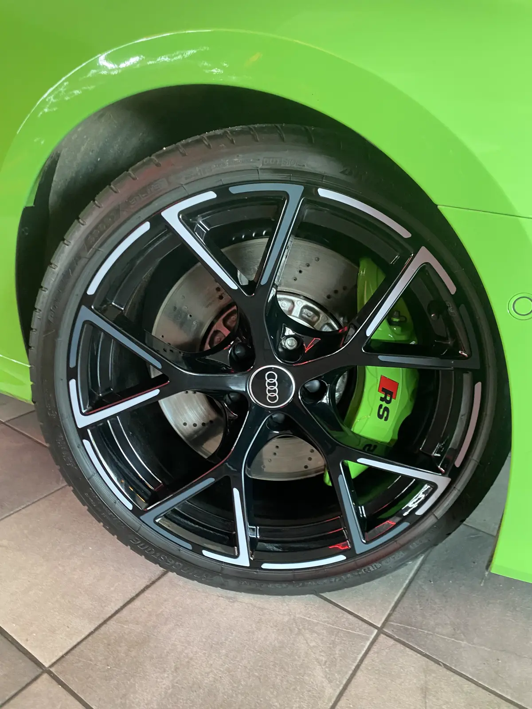

Style & Caractère
Peinture étrier de frein à Nancy
Transformez vos étriers en véritable élément de design. Peinture haute température professionnelle, large choix de teintes, déco adhésive en option.
Technique & Résistance
Application professionnelle pour un rendu impeccable
L'étrier de frein est souvent négligé, pourtant il peut devenir un vrai élément de design. Que vous soyez amateur de voitures sportives ou simplement soucieux des détails, la peinture des étriers ajoute une finition soignée à votre véhicule.
Notre procédé comprend un démontage partiel si nécessaire, un nettoyage en profondeur, un masquage minutieux et une peinture haute température. En option : une décoration adhésive personnalisée !
Chaque étape est effectuée avec précision pour garantir une finition durable, sans bavure, et compatible avec tous types de véhicules. Chez Swag Auto, nous proposons un large choix de teintes résistantes à la chaleur et aux conditions de route.
Demandez un devis gratuit
Pourquoi peindre ses étriers ?
Impact visuel immédiat et finition premium
Impact visuel immédiat
Apportez une touche de sportivité ou d'élégance selon la couleur choisie. Un détail qui change tout le look de vos jantes.
Personnalisation esthétique
Choisissez la teinte qui correspond à vos jantes, votre carrosserie ou simplement vos envies. Rouge Racing, jaune sport, couleur sur mesure…
Finition haut de gamme
Un véhicule soigné jusque dans les moindres détails laisse une impression premium, que ce soit pour un usage personnel ou une revente.